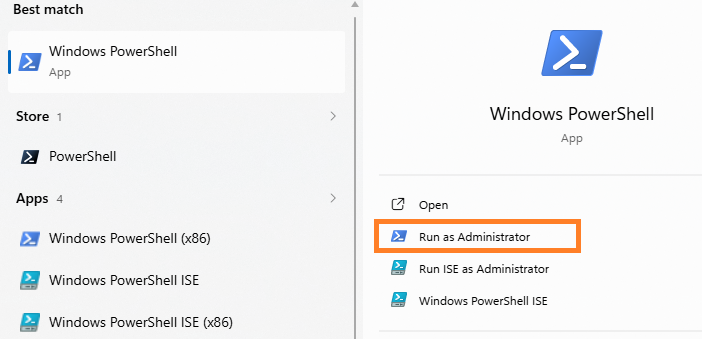
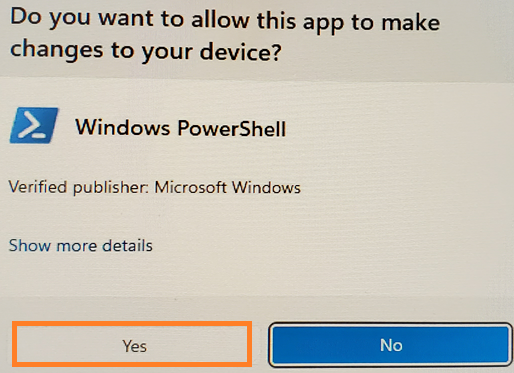
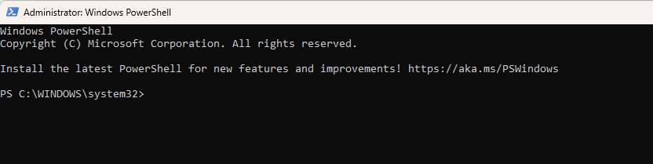
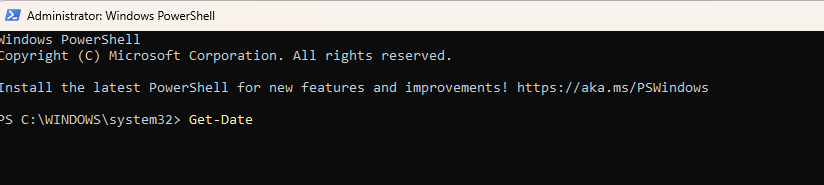
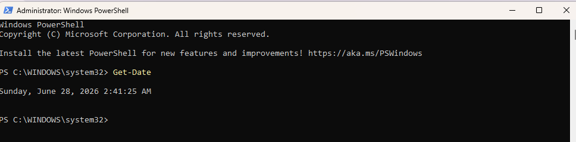

New to PowerShell?
Many Cowork repairs require PowerShell because Windows does not provide ways to change certain settings using the menus you may be normally accustomed to. Instead, you have to use PowerShell if you need to change settings for virtualization services, WSL shutdown, or VM state file recovery. If you’ve never used PowerShell before- don’t worry. You don’t need to know anything about scripting, coding, or command‑line tools. Every fix in this guide uses simple copy‑and‑paste commands that you run once and close.
This page gives you a quick, friendly primer so you feel confident before starting any repair steps.
1. What PowerShell Is (and Why Cowork Needs It)
PowerShell is a built‑in Windows tool that lets you control parts of the operating system that aren’t available in Settings or Control Panel. Most people never need it; until they run into virtualization issues.
Cowork uses Windows virtualization features such as:
- Virtual Machine Platform
- NAT routing
- Hyper‑V networking
- WSL2 resources
- VM state files (VHDX)
- File‑sharing layers (virtiofs, Plan9) Virtualization is simply a way to divide Cowork from Windows to create a safe sandbox. Virtualization lets Cowork do its work independently of Windows.
Windows does not provide menus or buttons for:
- Shutting down WSL
- Resetting stuck virtualization services
- Recreating NAT routing rules
- Clearing DNS on virtual adapters
- Renaming locked VM state files
So PowerShell is simply the tool that gives you access to those controls.
Think of it like this:
Settings is the front desk. PowerShell is the maintenance room.
Cowork repairs require the maintenance room.
You don’t need to understand the commands- you just paste them.
2. How to Open PowerShell (Administrator Mode)
Some repairs require elevated permissions so Windows can reset virtualization components.
Here’s the simplest way to open PowerShell correctly:
Open PowerShell as Administrator
- Click Start
- Type powershell
- Select Run as administrator

- Click Yes to allow changes to your computer

You’ll see a blue or black window with white text.
You must have administrator privileges to use PowerShell.
That's it! You are ready!
How to know it worked
At the top of the window, you should see:
Administrator: Windows PowerShell

If you don’t see “Administrator,” close the window and try again.
Optional: A Quick Confidence Boost
You can test that PowerShell is working by running this harmless command:
Get-Date

It will simply display the current date and time.
If you see a timestamp, you’re good to go.

3. How to Use Copy‑and‑Paste Code Blocks
Every fix in this guide includes a code block — a small set of commands you copy from the page and paste into PowerShell. You don’t need to type anything yourself.
Here’s the easiest way to do it:
Step 1 — Copy the code block
- Move your mouse over the code block.
- Click the Copy button (usually shown as two overlapping squares).
- The text is now saved to your clipboard.
If your browser doesn’t show a copy button, you can also highlight the text with your mouse, right‑click, and choose Copy.
Step 2 — Paste the code into PowerShell
- Make sure the PowerShell window is open and says Administrator: Windows PowerShell at the top.
- Click inside the PowerShell window once.
- Press Ctrl + V on your keyboard to paste the command.
You should see the text appear instantly.
Step 3 — Run the command
Press Enter on your keyboard.
PowerShell will run the command and show some output.
You don’t need to interpret the output — just wait until it finishes and the prompt returns.
Step 4 — Move on to the next step
If the fix has more than one code block, repeat the same process:
- Copy
- Paste
- Press Enter
You can close PowerShell when the fix is complete.
A quick reassurance
PowerShell will not run anything until you press Enter, so you can safely paste commands without worrying about accidental execution.
All commands in this guide are designed for personal, unmanaged Windows devices and will not harm your computer.
New to PowerShell- Claude Cowork Troubleshooting Guide Created by ArchieCur in collaboration with Copilot (Microsoft) version 1.0.0 June 2026